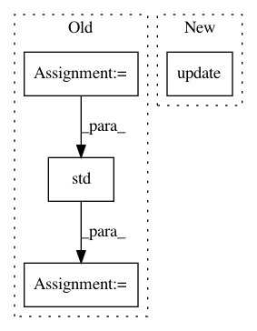

9d468d2c742491af2d2f506c648ddc95ffea6a64,src/sdk/pynni/nni/compression/torch/builtin_pruners.py,SensitivityPruner,calc_mask,#SensitivityPruner#Any#Any#Any#,107
Before Change
self.mask_list = {}
def calc_mask(self, weight, config, op_name, **kwargs):
mask = self.mask_list.get(op_name, torch.ones(weight.shape).type_as(weight))
// if we want to generate new mask, we should update weight first
weight = weight * mask
target_sparsity = config["sparsity"] * torch.std(weight).item()
k = int(weight.numel() * target_sparsity)
if k == 0:
return mask
After Change
return torch.ones(weight.shape).type_as(weight)
threshold = torch.topk(w_abs.view(-1), k, largest=False).values.max()
mask = torch.gt(w_abs, threshold).type_as(weight)
self.mask_list.update({op_name: mask})
self.if_init_list.update({op_name: False})
else:
mask = self.mask_list[op_name]
return mask
In pattern: SUPERPATTERN
Frequency: 3
Non-data size: 4
Instances
Project Name: Microsoft/nni
Commit Name: 9d468d2c742491af2d2f506c648ddc95ffea6a64
Time: 2019-10-20
Author: lanny@mail.hfut.edu.cn
File Name: src/sdk/pynni/nni/compression/torch/builtin_pruners.py
Class Name: SensitivityPruner
Method Name: calc_mask
Project Name: rail-berkeley/softlearning
Commit Name: a41f2ff4c1437f0b61e76265c31bdec71be0556f
Time: 2019-04-26
Author: hartikainen@berkeley.edu
File Name: softlearning/algorithms/sac.py
Class Name: SAC
Method Name: get_diagnostics
Project Name: rail-berkeley/softlearning
Commit Name: a41f2ff4c1437f0b61e76265c31bdec71be0556f
Time: 2019-04-26
Author: hartikainen@berkeley.edu
File Name: softlearning/algorithms/sql.py
Class Name: SQL
Method Name: get_diagnostics